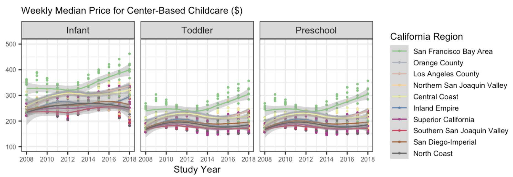

childcare_costs <- read_csv('https://raw.githubusercontent.com/rfordatascience/tidytuesday/master/data/2023/2023-05-09/childcare_costs.csv')
counties <- read_csv('https://raw.githubusercontent.com/rfordatascience/tidytuesday/master/data/2023/2023-05-09/counties.csv')
tax_rev <- read_csv('https://atheobold.github.io/groupworthy-data-science/labs/instructions/data/ca_tax_revenue.csv')Lab 4: Childcare Costs in California
Part One: Set-up
In this lab, we will be using the tidyr and forcats packages to explore the cost of childcare across the US. You are expected to use functions from tidyr and forcats to do your data manipulation!
Accessing the Lab
Download the template Lab 4 Quarto file here: lab-4-student.qmd
Important
Be sure to save this in the Lab 4 folder, inside your Week 4 folder, inside your STAT 331 folder!
The data for the lab are coming from TidyTuesday, so we will load them using a URL (no need to download them).
Tip
I advise you to focus particularly on:
Setting chunk options carefully.
Making sure you don’t print out more output than you need.
Making sure you don’t assign more objects than necessary. Avoid “object junk” in your environment.
Making your code readable and nicely formatted.
Thinking through your desired result before writing any code.
Part Two: Exploring Childcare Costs
The Data
In this lab we’re going look at the median weekly cost of childcare in California. The data come to us from TidyTuesday. A detailed description of the data can be found here. You will need to use this data dictionary to complete the lab!
We also have information from the California State Controller on tax revenue for california counties from 2005 - 2018. I compiled the data from this website for you. Note that there is no data for San Franscisco County. The variables included in the ca_tax_revenue.csv data file (loaded below) include:
entity_name: County nameyear: fiscal yeartotal_property_taxes: total revenue in $ from property taxessales_and_use_taxes: total revenue in $ from sales and use taxes
0. Load the appropriate libraries and the data.
1. Briefly describe the childcare_costs dataset (~ 4 sentences). What information does it contain?
California Childcare Costs
2. Let’s start by focusing only on California. Create a ca_childcare dataset of childcare costs in California, containing (1) county information and (2) all information from the childcare_costs dataset. You should do all of this within one pipeline.
TipCheckpoint
There are 58 counties in CA and 11 years in the dataset. Therefore, your new dataset should have 53 x 11 = 638 observations.
3. Now, lets add the tax revenue information to the ca_childcare dataset. Add the data from tax_rev for the counties and years that are already in the ca_childcare data. Overwrite the old ca_childcare data with this dataset.
TipCheckpoint
You are only adding columns here, so your new dataset should still have 638 observations!
4. Using a function from the forcats package, complete the code below to create a new variable where each county is categorized into one of the ten (10) Census regions in California. Use the Region description (from the plot), not the Region number. The code below will help you get started.
Code
# defining 10 census regions
superior_counties <- c("Butte","Colusa","El Dorado",
"Glenn","Lassen","Modoc",
"Nevada","Placer","Plumas",
"Sacramento","Shasta","Sierra","Siskiyou",
"Sutter","Tehama","Yolo","Yuba")
north_coast_counties <- c("Del Norte","Humboldt","Lake",
"Mendocino","Napa","Sonoma","Trinity")
san_fran_counties <- c("Alameda","Contra Costa","Marin",
"San Francisco","San Mateo","Santa Clara",
"Solano")
n_san_joaquin_counties <- c("Alpine","Amador","Calaveras","Madera",
"Mariposa","Merced","Mono","San Joaquin",
"Stanislaus","Tuolumne")
central_coast_counties <- c("Monterey","San Benito","San Luis Obispo",
"Santa Barbara","Santa Cruz","Ventura")
s_san_joaquin_counties <- c("Fresno","Inyo","Kern","Kings","Tulare")
inland_counties <- c("Riverside","San Bernardino")
la_county <- "Los Angeles"
orange_county <- "Orange"
san_diego_imperial_counties <- c("Imperial","San Diego")# Finish this code using the census regions defined above
ca_childcare <- ca_childcare |>
mutate(county_name = str_remove(county_name, " County")) |>
...
Tip
I have provided you with code that eliminates the word “County” from each of the county names in your ca_childcare dataset. You should keep this line of code and pipe into the rest of your data manipulations.
You will learn about the str_remove() function from the stringr package next week!
5. Let’s consider the median household income of each region, and how that income has changed over time. Create a table with ten rows, one for each region, and two columns, one for 2008 and one for 2018 (plus a column for region). The cells should contain the median() of the median household income (expressed in 2018 dollars) of the region and the study_year. Order the rows by 2018 values from highest income to lowest income.
Tip
This will require transforming your data! Sketch out what you want the data to look like before you begin to code. You should be starting with your California dataset that contains the regions!
6. Which California region had the lowest median full-time median weekly price for center-based childcare for infants in 2018? Does this region correspond to the region with the lowest median income in 2018 that you found in Q4?
Warning
The code should give me the EXACT answer. This means having the code output the exact row(s) and variable(s) necessary for providing the solution.
7. The following plot shows, for all ten regions, the change over time of the full-time median price for center-based childcare for infants, toddlers, and preschoolers. Recreate the plot. You do not have to replicate the exact colors or theme, but your plot should have the same content, including the order of the facets and legend, reader-friendly labels, axes breaks, and a loess smoother.
TipHints
This will require transforming your data! Sketch out what you want the data to look like before you begin to code. You should be starting with your California dataset that contains the regions.
A point on the plot represents one county and year.
You should use a forcats function to reorder the legend automatically (not by hand).
Try setting aspect.ratio = 1 in theme() if your plot is squished.
If you need more colors than what a color palette has by default, you can use the colorRampPalette() function to get more colors.
Again, your plot does not need to look exactly like this one!!!
Remember to avoid “object junk” in your environment!

Median Household Income vs. Childcare Costs for Infants
TipRefresher on Linear Regression
In case it has been a second or two since you did a linear regression, this chapter is a nice refresher on simple linear regression with a single predictor.
8. Create a scatterplot showing the relationship between median household income (expressed in 2018 dollars) and the full-time median weekly price charged for center-based childcare for an infant in California. Overlay a linear regression line (lm) to show the trend.
9. Look up the documentation for lm() and fit a linear regression model to the relationship shown in your plot above.
# complete the code provided
reg_mod1 <- lm()
summary(reg_mod1)10. Using the output from summary(), write out the estimated regression line (recall: \(y = mx + b\)).
11. Do you have evidence to conclude there is a relationship between the median household income and the median weekly cost of center-based childcare for infants in California? Cite values from your summary() output to support your claim!